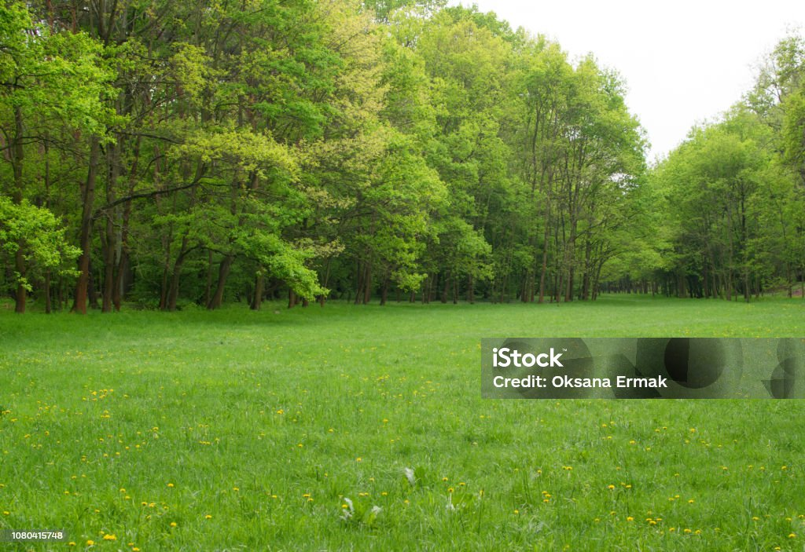

Magyarországon tíz nemzeti park található, amelyek különleges természeti értékeket védenek. Számos ritka növénynek és állatnak adnak otthont, emellett gyönyörű tájakat is megőriznek.

Magyarország első nemzeti parkja a Hortobágyi Nemzeti Park volt, amelyet 1973-ban alapítottak. Érdekesség, hogy a nemzeti parkokban ritka állatokkal, például túzokokkal és vadlovakkal is találkozhatunk.
| nemzeti park | tájegység | védett állat |
|---|---|---|
| Hortobágyi Nemzeti Park | Alföld | Túzok |
| Bükki Nemzeti Park | Északi-középhegység | Fekete gólya |
| Fekete gólya | Alföld | Magyar kökörcsin |